Figure 1: pbdR Relationships to Libraries
htmlxhtml
© 2013 pbdR Core Team. All rights reserved.
Permission is granted to make and distribute verbatim copies of this manual provided the copyright notice and this permission notice are preserved on all copies.
Permission is granted to copy and distribute modified versions of this manual under the conditions for verbatim copying, provided that the entire resulting derived work is distributed under the terms of a permission notice identical to this one.
Permission is granted to copy and distribute translations of this manual into another language, under the above conditions for modified versions, except that this permission notice may be stated in a translation approved by the pbdR Core Team.
This publication was typeset using LATEX.
We have tried to make the installation process as simple as possible, and these instructions as thorough as possible. However, this is not an entirely labor-free procedure, and does not even get into the really difficult side of large-scale computing: managing the system.
If you affiliated with a United States institution and are engaged in research that requires large-scale computing resources, we encourage you to consider getting an allocation with us . Not only can we tailor our pbdR development to help your research, but we can manage the hardware, operating system, and software utilities for you, so that you can focus entirely on the thing that matters, your research.
In this guide, we will detail the necessary steps for how to set up a pbdR environment. What follows in the remaining sections is a very lengthy list of installation instructions; however, most users should find the process fairly straight-forward, and may not need (or want) all of the details we will provide unless something goes wrong. In any case, the short version for setting up a pbdR environment is to:
Items 1 and 2 are interchangeable, and so if you already have R (and additionally Rtools for Windows) and/or an MPI library installed, then merely skip this/these step(s); there is no need to reinstall anything.
This should be fairly painless. R has binary packages for every operating system you have heard of (and some you haven’t), and the install should go fine. Of course, since R is open source, you are free to compile it yourself, should have have reason or need to do so. You can find both the source as well as binaries at the R project’s main site: http://cran.r-project.org/.
Additionally, you may wish to customize your R build by compiling from source. For example, you may wish to link R with a high performance linear algebra library, such as MKL. See the R Installation and Administration Manual at http://cran.r-project.org/doc/manuals/R-admin.html for full details.
Windows users should install MPICH2, available from http://www.mpich.org/ .
All released pbdR packages are available from http://cran.r-project.org/ which is the Comprehensive R Archive Network (CRAN). This is similar to the CPAN for perl or CTAN for LATEX, although with many improvements and benefits over its competitors.
It is also possible to link pbdR with high performance linear algebra libraries, such as MKL.
Figure 1 offers some insight into the package organization. See the pbdSLAP vignette for more details.
Officially, the pbdR team does not support gaming consoles (only kidding!). Jokes aside, it is possible to install a pbdR environment on Windows, but it is not necessarily the easiest. This guide will explain the basics of getting R, OpenMPI, and pbdR installed on your Windows system. The instructions and screenshots for this document are for version 2.15.1 of R, but later versions should be very similar, if not identical.
If you are completely new to R, then you may find the R for Windows FAQ useful. Additionally, there is also an R FAQ which may also be useful for those who know very little about R. To learn more about programming with R, then you may find the Introduction to R guide useful.


Once R is finished installing, you need to install the rlecuyer package. To install it from an interactive R session, simply start an R session and issue the command


Before proceeding, please be aware that this installation requires administrative privileges.
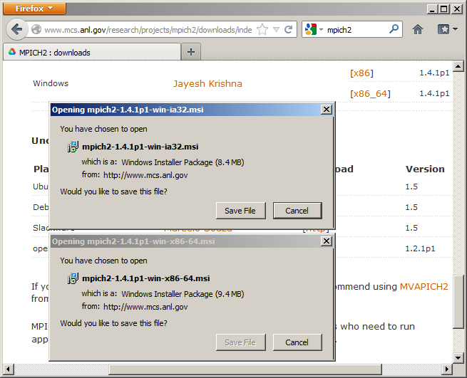
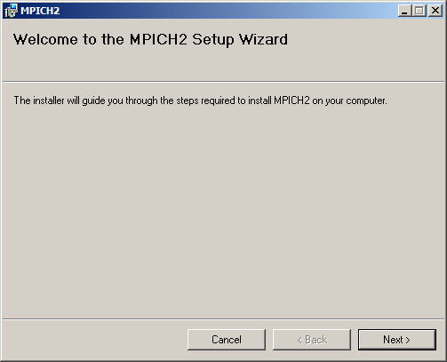
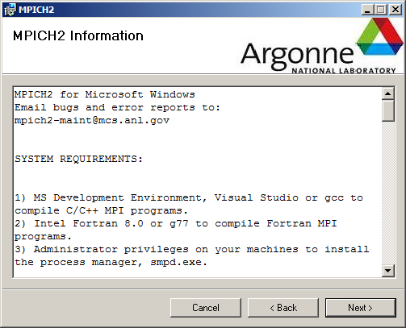
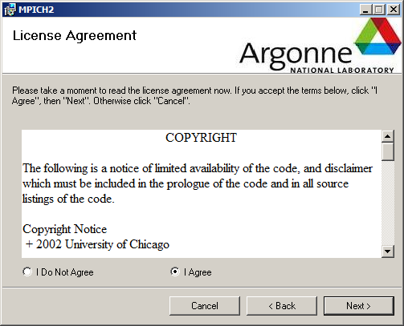
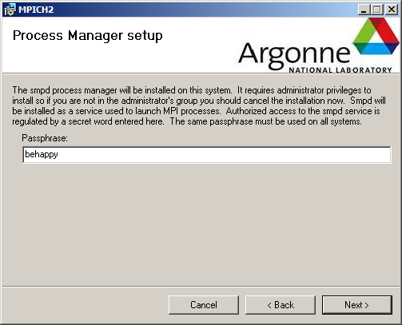
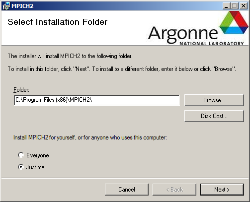

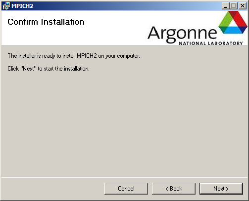
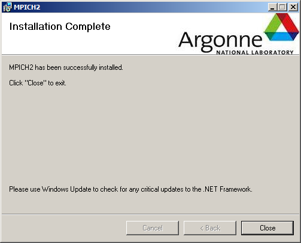
Unfortunately, we do not distribute pbdR binary packages on the CRAN for Windows. This means that you must install our packages from source on Windows, and the process may be foreign. We will present two approaches; the short way, installing from github using the devtools package, and a longer way, installing from a downloaded source file. However, do be aware that each of these methods requires the installation of the Rtools package from Section 3.2 (so that step cannot be skipped).
Finally, we note that it may not be possible to install the pbdNCDF4 package on Windows. We have not tested this and, assuming it is possible, it would be very difficult to get NetCDF4 compiled in parallel first. If you have success installing this package on Windows, we would love to hear from you.
This is probably the simplest method, assuming that you have Rtools installed and set up correctly. If Rtools is not in your PATH, then you may need to enter something like the following:
Where the rtools and mingw directories are as they are on your machine.
Once that is settled, installing is fairly simple. You simply load the devtools package and install from our github repo as follows:
You can also install really new package builds, which will be very current in terms of features, but also bugs (or even complete package breakage). If you’re sure you want these packages, then you can install them as follows:
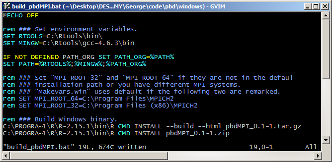
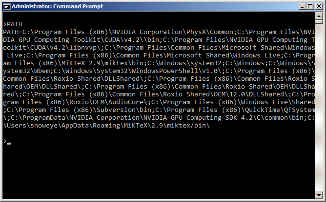
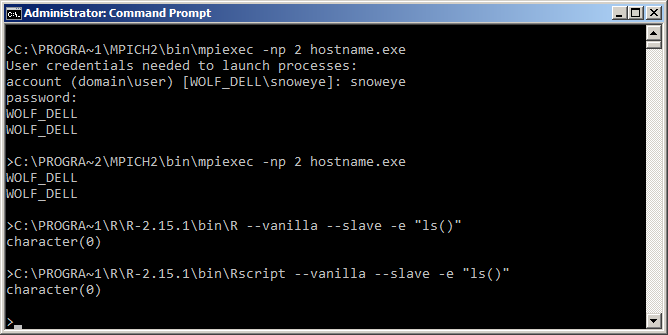
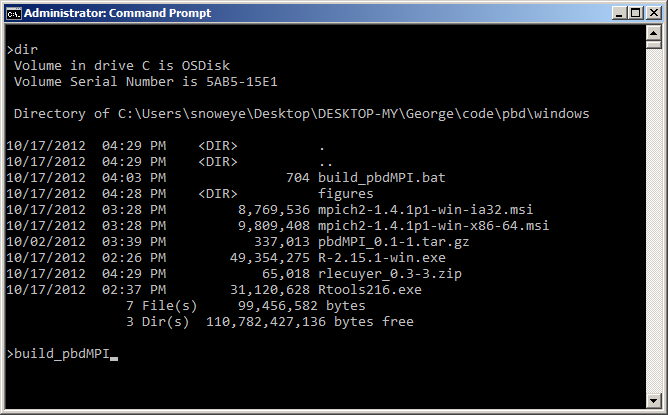
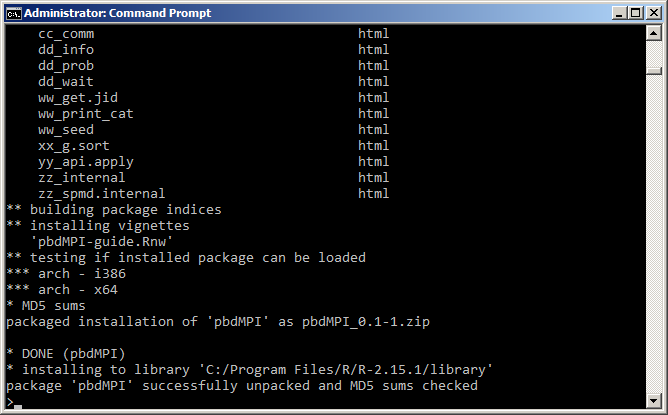
This information is covered in much more detail in the pbdDEMO vignette, and should not be considered a substitute. However, there are two key points one needs to understand in order to use pbdR tools. Namely,
For full details, see the pbdDEMO package vignette.
Below is a simple pbdR script. This will help you know if things are installed properly or not. To understand what the script is doing, or to learn how to do much more substantial things, you should see the pbdDEMO package vignette.
To run the script, you must do so in batch (i.e., non-interactively). First save its contents to the file my˙script.r, and then open a command prompt. On Windows, you should execute the command:
mpiexec.exe -np 2 Rscript my_script.r
During the course of installation, you may run into unrecoverable issues. The pbdR team does not support MPI libraries or R core, so if you have problems during that portion of the installation phase, we probably can not directly help you. However, there are still many great resources at your disposal, maintained by those individual projects.
If you have problems installing or customizing R, see the R Installation and Administration Manual at http://cran.r-project.org/doc/manuals/R-admin.html for help.
If you are having trouble installing an MPI library, you should see that library’s official documentation. For OpenMPI, see http://www.open-mpi.org/community/help/ and for MPICH, see http://www.mpich.org/documentation/guides/ .
For the remainder, we will be addressing installation issues with pbdR packages.
This is a quick list of potential problems you could encounter when installing pbdR packages. For additional troubleshooting or installation options, each package has a vignette which may offer additional useful information.
R CMD INSTALL pbdMPI_0.1-6.tar.gz \
--configure-args=’--with-mpi-type=OPENMPI’
or if installing from R:
See the pbdMPI vignette for more details.
R CMD INSTALL pbdMPI_0.1-6.tar.gz --no-test-load
or if installing from R: